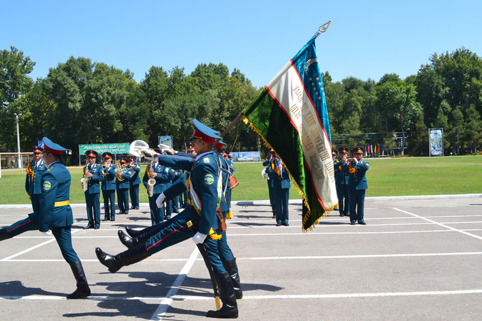

Oʻzbekiston Qurolli Kuchlarining tashkil etilishi (1992)
Mustaqillikdan keyin davlat qurishning muhim boʻgʻinlaridan biri — milliy armiya edi. 1992-yil 14-yanvarda Oʻzbekiston oʻz hududidagi sobiq sovet Turkiston harbiy okrugi qismlarini milliy tasarrufiga olib, Qurolli Kuchlarni tashkil etdi. 1992-yil 2-iyulda Mudofaa vazirligi taʼsis etildi; birinchi mudofaa vaziri — Rustam Ahmedov (1997-yilgacha rahbarlik qilgan). 1993-yil 29-dekabrda parlament 14-yanvarni Vatan himoyachilari kuni deb belgiladi. Faqat tasdiqlangan faktlar va sanalar.

1991-yilgi mustaqillikdan soʻng yosh davlat oldida turgan asosiy vazifalardan biri — oʻz milliy armiyasini tuzish edi. Quyida Oʻzbekiston Qurolli Kuchlarining tashkil etilishi faqat tasdiqlangan faktlar va sanalar asosida bayon etiladi. Mustaqillikning eʼlon qilinishi haqida alohida maqolamiz bor (Oʻzbekiston mustaqilligi, 1991).
Sovet merosi: Turkiston harbiy okrugi
Toshkent sovet davrida Turkiston harbiy okrugining bosh qarorgohi boʻlgan. Shu bois Oʻzbekiston Markaziy Osiyo respublikalari orasida eng kuchli harbiy infratuzilmani meros qilib oldi: oʻz hududidagi harbiy qismlar, qarorgohlar va inshootlar yangi davlatga oʻtdi.
1992-yil 14-yanvar: Qurolli Kuchlar tuzildi
1992-yil 14-yanvarda Oʻzbekiston oʻz hududidagi sobiq sovet harbiy okrugi qismlarini milliy tasarruf (yurisdiksiya)ga oldi — bu sana Oʻzbekiston Respublikasi Qurolli Kuchlarining tashkil etilgan kuni hisoblanadi. Keyinchalik aynan shu kun Vatan himoyachilari kuni sifatida belgilandi.
Mudofaa vazirligining tashkil etilishi
1992-yil 20-fevralda yangi tashkil etilayotgan Mudofaa vazirligi sobiq sovet okrugi qarorgohi binolarini oʻz ixtiyoriga oldi. 1992-yil 2-iyuldagi prezident farmoni bilan Mudofaa vazirligi (avvalgi Mudofaa ishlari vazirligi oʻrnida) taʼsis etildi.
Birinchi mudofaa vaziri — Rustam Ahmedov
Oʻzbekistonning birinchi mudofaa vaziri — Rustam Ahmedov. U 1991-yildan mudofaa ishlariga rahbarlik qilgan va vazirlikni 1997-yilgacha boshqargan. Rustam Ahmedov 2025-yil oktabrida vafot etdi.
Qoʻshin turlari va tamoyillar
Oʻzbekiston Qurolli Kuchlari asosan Quruqlikdagi qoʻshinlar hamda Havo kuchlari va havo mudofaasidan iborat boʻlib, keyinchalik Milliy gvardiya va Chegara qoʻshinlari ham shakllandi. Armiya chaqiruv (harbiy majburiyat) asosida butlanadi, harbiy doktrina mudofaa xarakteriga ega. Dastlabki yillarda ketayotgan sovet/rus ofitserlari oʻrnini milliy kadrlar egalladi. Turli manbalarga koʻra, hozirgi kunda faol harbiy xizmatchilar soni ~120 000 nafarni tashkil etadi.
Vatan himoyachilari kuni (1993)
1993-yil 29-dekabrda parlament (Oliy Kengash) 14-yanvarni — Qurolli Kuchlar tashkil etilgan kunni — Vatan himoyachilari kuni deb belgiladi. Har yili shu kuni Toshkentda, Mustaqillik maydonida harbiy qismlar saf tortadi.